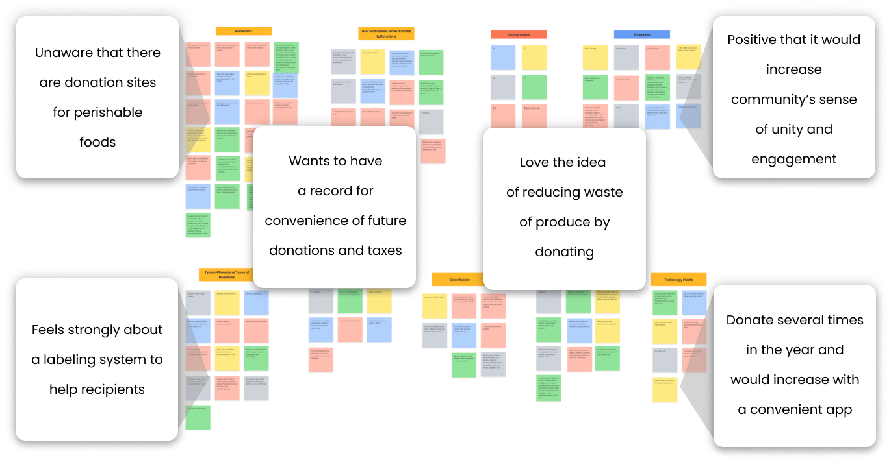

There are many great locations and fridges set up to serve the NYC Community!
Our
team worked on creating a
mobile
app
to help eliminate food insecurity through easy to access refrigerator drop points filled by and supported
through
community members.
People are not aware of how to use them, or that they even exist
No clear organized system for donating, cleaning and utilizing fridge contents as a recipient
All this is affecting community engagement
Create a mobile application that centralizes all information for donors & recipients to access the
fridges in
order to
increase community engagement
02User Research
RESEARCH QUESTIONS
We wanted to understand how our users habits and needs reflect the food donation space
RESEARCH OBJECTIVES
Understand the users donation habits and comfortability with making donations
Gain insight as to what affects their decision of how frequently to donate
Understand the relationship that technology plays in regards to donating
PROTO PERSONA
Donor:
Paul, 32, Graphic Designer from Brooklyn.
Active community member engaged in building and maintenance of community programs
Recipient:
Anna, 50 year old Brooklyn resident unemployed due to COVID-19 with a dairy
allergy.
Recently needs help since finances are tight for groceries.
PAIN POINTS:
No developed technology to support his community
Fridge is messy and some of the food is spoiled
PAIN POINTS:
Identifying what is available in fridge/food allergens
Fridge is too disorganized
GOALS AND NEEDS:
Assurance of fridge space when people spend time traveling to donate
GOALS AND NEEDS:
Assurance of food contents to safely decide which meals to collect
INTERVIEW PLAN
Lead with targeted questions to gain insight to the users demographics, routine and general feelings
around the
act of
donating or interacting with donation systems on the recipient end
Followed by questions designed to survey our three objectives
Surveyed recipients & social workers via online forms and 5 people directly via Zoom
DONOR FOCUSED QUESTIONS:
Assurance of fridge space when people spend time traveling to donate
RECIPIENT FOCUSED QUESTIONS:
Assurance of food contents to safely decide which meals to attend
INTERVIEWS INSIGHTS AND AFFINITY DIAGRAM

03DEFINE & IDEATE
USER PERSONA
ABOUT - HABITS - PAIN POINTS - GOALS
Michael, 32, is a very outgoing and generous person working at Google as a Graphic Designer
and
outside of work
loves to stay
active and engaged in his community. He is an avid donor averaging 3 times per month but wants to amplify
the
impact he
can make on the community while reducing his food waste. Currently, he is having trouble locating donation
points and
navigating the current website and doesn’t feel that he is aware of which fridges need specific foods.
PROBLEM STATEMENT
NYC Community Fridge was designed to organize and connect community access refrigerators and allow
people to know
what
perishable food they can donate and access. We have observed that our product or service isn’t meeting basic
organizational standards, which is causing this people to be unaware of where they can donate or access food. How
Might
We improve NYC Fridge so that our customers are aware of this service and able to easily locate and access their
local
branch?
FEATURE PRIORATIZATION MATRIX
USER FLOW
04DIGITAL DESIGN
CRAZY SKETCHES
04DIGITAL WIREFRAMES
LO-FI WIREFRAMES
05FINAL DESIGNS
HI-FI WIREFRAMES
FINAL THOUGHTS
NYC Fridges in the Future
We would like to develop the app further and add recipients portal
Add specialty to each fridge (Asian, Italian, Indian)
Easy to use search by neighbourhood
Engage more people in the communities
Ability to add fridges
Add camera feature
Encourage local businesses to be more involved with NYC Fridges